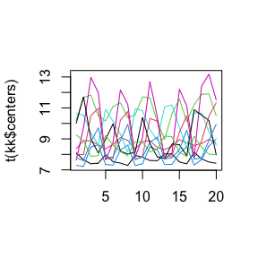

vignettes/ExampleCLL.Rmd
ExampleCLL.RmdRetrieve the full CLL dataset.
#> Le chargement a nécessité le package : Patternsrequire(Patterns)
CLLfile <- "https://github.com/fbertran/Patterns/raw/master/add_data/CLL.RData"
repmis::source_data(CLLfile)
#> Downloading data from: https://github.com/fbertran/Patterns/raw/master/add_data/CLL.RData
#> SHA-1 hash of the downloaded data file is:
#> 8dca428b86d460cd2018745029f03bc12aa8be65
#> [1] "CLL"
CLL[1:10,1:5]
#> probeset nom
#> 1 1007_s_at DDR1 or MIR4640
#> 2 1053_at RFC2
#> 3 117_at HSPA6
#> 4 121_at PAX8
#> 5 1255_g_at GUCA1A
#> 6 1294_at UBA7 or MIR5193
#> 7 1316_at THRA
#> 8 1320_at PTPN21
#> 9 1405_i_at CCL5
#> 10 1431_at CYP2E1
#> Healthy.B.cell..subject.N1_unstimulated.cells_at.60min
#> 1 560.69
#> 2 220.58
#> 3 269.54
#> 4 677.51
#> 5 142.21
#> 6 393.85
#> 7 345.01
#> 8 173.09
#> 9 145.81
#> 10 203.18
#> Healthy.B.cell..subject.N1_unstimulated.cells_at.90min
#> 1 557.05
#> 2 216.36
#> 3 263.38
#> 4 598.17
#> 5 135.68
#> 6 381.74
#> 7 324.51
#> 8 175.87
#> 9 153.66
#> 10 194.90
#> Healthy.B.cell..subject.N1_unstimulated.cells_at.210min
#> 1 560.79
#> 2 228.93
#> 3 244.14
#> 4 617.53
#> 5 145.23
#> 6 365.96
#> 7 334.87
#> 8 153.67
#> 9 141.80
#> 10 187.53Split the CLL dataset into healthy and aggressive stimulated and unstimulated dataset.
hea_US<-CLL[,which((1:48)%%8<5&(1:48)%%8>0)+2]
hea_S<-CLL[,which(!((1:48)%%8<5&(1:48)%%8>0))+2]
agg_US<-CLL[,which((1:40)%%8<5&(1:40)%%8>0)+98]
agg_S<-CLL[,which(!((1:40)%%8<5&(1:40)%%8>0))+98]
m_hea_US<-as.micro_array(hea_US,c(60,90,210,390),6,name=CLL[,1],gene_ID=CLL[,2])
m_hea_S<- as.micro_array(hea_S,c(60,90,210,390),6,name=CLL[,1],gene_ID=CLL[,2])
m_agg_US<-as.micro_array((agg_US),c(60,90,210,390),5,name=CLL[,1],gene_ID=CLL[,2])
m_agg_S<- as.micro_array((agg_S),c(60,90,210,390),5,name=CLL[,1],gene_ID=CLL[,2])Focus on EGR1, run the code to get the graph of the expression values (pasted together for all the subjects) for all the probeset tagged as EGR1.
selection1<-geneSelection(list(m_agg_US,m_agg_S),list("condition&time",c(1,2),c(1,1)),-1,alpha=0.1)
#> [1] "The selection is not empty"
#> [1] "This function returns the stimulated expression"
#> The matrix :
#>
#> CLL.B.cell..patient.M2_unstimulated.cells_at.60min_.agg.
#> 1007_s_at 701.41
#> 1053_at 215.92
#> 117_at 732.81
#> 121_at 790.27
#> 1255_g_at 143.26
#> 1294_at 379.79
#> CLL.B.cell..patient.M2_unstimulated.cells_at.90min_.agg.
#> 1007_s_at 698.96
#> 1053_at 230.12
#> 117_at 954.94
#> 121_at 888.51
#> 1255_g_at 140.70
#> 1294_at 369.64
#> CLL.B.cell..patient.M2_unstimulated.cells_at.210min_.agg.
#> 1007_s_at 704.67
#> 1053_at 220.87
#> 117_at 240.87
#> 121_at 772.01
#> 1255_g_at 139.09
#> 1294_at 357.12
#> ...
#>
#> Vector of names :
#> [1] "1007_s_at" "1053_at" "117_at" "121_at" "1255_g_at" "1294_at"
#> ...Vector of geneID :
#> [1] "DDR1 or MIR4640" "RFC2" "HSPA6" "PAX8"
#> [5] "GUCA1A" "UBA7 or MIR5193"
#> ...
#> Vector of group :
#> [1] 0
#> ...
#> Vector of starting time :
#> [1] 0
#> ...
#> Vector of time :
#> [1] 60 90 210 390
#>
#> Number of subject :
#> [1] 5selection2<-geneSelection(list(m_agg_US,m_agg_S),list("condition&time",c(1,2),c(1,1)+1),-1,alpha=0.1)
#> [1] "The selection is not empty"
#> [1] "This function returns the stimulated expression"
#> The matrix :
#>
#> CLL.B.cell..patient.M2_unstimulated.cells_at.60min_.agg.
#> 1007_s_at 701.41
#> 1053_at 215.92
#> 117_at 732.81
#> 121_at 790.27
#> 1255_g_at 143.26
#> 1294_at 379.79
#> CLL.B.cell..patient.M2_unstimulated.cells_at.90min_.agg.
#> 1007_s_at 698.96
#> 1053_at 230.12
#> 117_at 954.94
#> 121_at 888.51
#> 1255_g_at 140.70
#> 1294_at 369.64
#> CLL.B.cell..patient.M2_unstimulated.cells_at.210min_.agg.
#> 1007_s_at 704.67
#> 1053_at 220.87
#> 117_at 240.87
#> 121_at 772.01
#> 1255_g_at 139.09
#> 1294_at 357.12
#> ...
#>
#> Vector of names :
#> [1] "1007_s_at" "1053_at" "117_at" "121_at" "1255_g_at" "1294_at"
#> ...Vector of geneID :
#> [1] "DDR1 or MIR4640" "RFC2" "HSPA6" "PAX8"
#> [5] "GUCA1A" "UBA7 or MIR5193"
#> ...
#> Vector of group :
#> [1] 0
#> ...
#> Vector of starting time :
#> [1] 0
#> ...
#> Vector of time :
#> [1] 60 90 210 390
#>
#> Number of subject :
#> [1] 5selection3<-geneSelection(list(m_agg_US,m_agg_S),list("condition&time",c(1,2),c(1,1)+2),50,alpha=0.005)
#> [1] "The selection is not empty"
#> [1] "This function returns the stimulated expression"
#> The matrix :
#>
#> CLL.B.cell..patient.M2_unstimulated.cells_at.60min_.agg.
#> 1007_s_at 701.41
#> 1053_at 215.92
#> 117_at 732.81
#> 121_at 790.27
#> 1255_g_at 143.26
#> 1294_at 379.79
#> CLL.B.cell..patient.M2_unstimulated.cells_at.90min_.agg.
#> 1007_s_at 698.96
#> 1053_at 230.12
#> 117_at 954.94
#> 121_at 888.51
#> 1255_g_at 140.70
#> 1294_at 369.64
#> CLL.B.cell..patient.M2_unstimulated.cells_at.210min_.agg.
#> 1007_s_at 704.67
#> 1053_at 220.87
#> 117_at 240.87
#> 121_at 772.01
#> 1255_g_at 139.09
#> 1294_at 357.12
#> ...
#>
#> Vector of names :
#> [1] "1007_s_at" "1053_at" "117_at" "121_at" "1255_g_at" "1294_at"
#> ...Vector of geneID :
#> [1] "DDR1 or MIR4640" "RFC2" "HSPA6" "PAX8"
#> [5] "GUCA1A" "UBA7 or MIR5193"
#> ...
#> Vector of group :
#> [1] 0
#> ...
#> Vector of starting time :
#> [1] 0
#> ...
#> Vector of time :
#> [1] 60 90 210 390
#>
#> Number of subject :
#> [1] 5selection4<-geneSelection(list(m_agg_US,m_agg_S),list("condition&time",c(1,2),c(1,1)+3),50,alpha=0.005)
#> [1] "The selection is not empty"
#> [1] "This function returns the stimulated expression"
#> The matrix :
#>
#> CLL.B.cell..patient.M2_unstimulated.cells_at.60min_.agg.
#> 1007_s_at 701.41
#> 1053_at 215.92
#> 117_at 732.81
#> 121_at 790.27
#> 1255_g_at 143.26
#> 1294_at 379.79
#> CLL.B.cell..patient.M2_unstimulated.cells_at.90min_.agg.
#> 1007_s_at 698.96
#> 1053_at 230.12
#> 117_at 954.94
#> 121_at 888.51
#> 1255_g_at 140.70
#> 1294_at 369.64
#> CLL.B.cell..patient.M2_unstimulated.cells_at.210min_.agg.
#> 1007_s_at 704.67
#> 1053_at 220.87
#> 117_at 240.87
#> 121_at 772.01
#> 1255_g_at 139.09
#> 1294_at 357.12
#> ...
#>
#> Vector of names :
#> [1] "1007_s_at" "1053_at" "117_at" "121_at" "1255_g_at" "1294_at"
#> ...Vector of geneID :
#> [1] "DDR1 or MIR4640" "RFC2" "HSPA6" "PAX8"
#> [5] "GUCA1A" "UBA7 or MIR5193"
#> ...
#> Vector of group :
#> [1] 0
#> ...
#> Vector of starting time :
#> [1] 0
#> ...
#> Vector of time :
#> [1] 60 90 210 390
#>
#> Number of subject :
#> [1] 5Merge the four selections into a single one.
selection<-Patterns::unionMicro(list(selection1,selection2,selection3,selection4))
summary(selection)
#> CLL.B.cell..patient.M2_stimulated.cells_at.60min_.agg.
#> Min. : 6.776
#> 1st Qu.: 7.789
#> Median : 8.177
#> Mean : 8.552
#> 3rd Qu.: 8.932
#> Max. :12.620
#> CLL.B.cell..patient.M2_stimulated.cells_at.90min_.agg.
#> Min. : 6.429
#> 1st Qu.: 7.741
#> Median : 8.340
#> Mean : 8.832
#> 3rd Qu.: 9.461
#> Max. :13.371
#> CLL.B.cell..patient.M2_stimulated.cells_at.210min_.agg.
#> Min. : 6.408
#> 1st Qu.: 8.005
#> Median : 8.932
#> Mean : 9.288
#> 3rd Qu.:10.355
#> Max. :13.958
#> CLL.B.cell..patient.M2_stimulated.cells_at.390min_.agg.
#> Min. : 6.613
#> 1st Qu.: 8.033
#> Median : 8.986
#> Mean : 9.131
#> 3rd Qu.: 9.990
#> Max. :14.166
#> CLL.B.cell..patient.UM1_stimulated.cells_at.60min_.agg.
#> Min. : 6.855
#> 1st Qu.: 7.649
#> Median : 8.151
#> Mean : 8.469
#> 3rd Qu.: 9.083
#> Max. :12.256
#> CLL.B.cell..patient.UM1_stimulated.cells_at.90min_.agg.
#> Min. : 6.860
#> 1st Qu.: 7.748
#> Median : 8.224
#> Mean : 8.585
#> 3rd Qu.: 9.026
#> Max. :12.673
#> CLL.B.cell..patient.UM1_stimulated.cells_at.210min_.agg.
#> Min. : 6.634
#> 1st Qu.: 8.199
#> Median : 9.079
#> Mean : 9.257
#> 3rd Qu.:10.269
#> Max. :12.598
#> CLL.B.cell..patient.UM1_stimulated.cells_at.390min_.agg.
#> Min. : 6.716
#> 1st Qu.: 8.043
#> Median : 9.073
#> Mean : 9.151
#> 3rd Qu.:10.125
#> Max. :12.915
#> CLL.B.cell..patient.UM2_stimulated.cells_at.60min_.agg.
#> Min. : 6.794
#> 1st Qu.: 7.657
#> Median : 8.182
#> Mean : 8.419
#> 3rd Qu.: 8.926
#> Max. :11.797
#> CLL.B.cell..patient.UM2_stimulated.cells_at.90min_.agg.
#> Min. : 6.553
#> 1st Qu.: 7.868
#> Median : 8.420
#> Mean : 8.838
#> 3rd Qu.: 9.232
#> Max. :13.391
#> CLL.B.cell..patient.UM2_stimulated.cells_at.210min_.agg.
#> Min. : 6.770
#> 1st Qu.: 8.213
#> Median : 9.027
#> Mean : 9.242
#> 3rd Qu.:10.144
#> Max. :13.459
#> CLL.B.cell..patient.UM2_stimulated.cells_at.390min_.agg.
#> Min. : 6.767
#> 1st Qu.: 8.047
#> Median : 8.613
#> Mean : 8.774
#> 3rd Qu.: 9.381
#> Max. :12.201
#> CLL.B.cell..patient.UM3_stimulated.cells_at.60min_.agg.
#> Min. : 6.670
#> 1st Qu.: 7.665
#> Median : 8.049
#> Mean : 8.245
#> 3rd Qu.: 8.580
#> Max. :11.190
#> CLL.B.cell..patient.UM3_stimulated.cells_at.90min_.agg.
#> Min. : 6.978
#> 1st Qu.: 7.764
#> Median : 8.287
#> Mean : 8.574
#> 3rd Qu.: 9.056
#> Max. :12.449
#> CLL.B.cell..patient.UM3_stimulated.cells_at.210min_.agg.
#> Min. : 6.605
#> 1st Qu.: 8.053
#> Median : 8.779
#> Mean : 9.131
#> 3rd Qu.: 9.937
#> Max. :12.544
#> CLL.B.cell..patient.UM3_stimulated.cells_at.390min_.agg.
#> Min. : 6.653
#> 1st Qu.: 7.909
#> Median : 8.877
#> Mean : 9.007
#> 3rd Qu.: 9.821
#> Max. :12.848
#> CLL.B.cell..patient.UM4_stimulated.cells_at.60min_.agg.
#> Min. : 6.802
#> 1st Qu.: 7.678
#> Median : 8.318
#> Mean : 8.745
#> 3rd Qu.: 9.186
#> Max. :13.437
#> CLL.B.cell..patient.UM4_stimulated.cells_at.90min_.agg.
#> Min. : 6.604
#> 1st Qu.: 7.840
#> Median : 8.542
#> Mean : 9.026
#> 3rd Qu.: 9.980
#> Max. :13.173
#> CLL.B.cell..patient.UM4_stimulated.cells_at.210min_.agg.
#> Min. : 6.592
#> 1st Qu.: 8.190
#> Median : 9.185
#> Mean : 9.361
#> 3rd Qu.:10.454
#> Max. :13.772
#> CLL.B.cell..patient.UM4_stimulated.cells_at.390min_.agg.
#> Min. : 6.758
#> 1st Qu.: 7.955
#> Median : 9.150
#> Mean : 9.150
#> 3rd Qu.:10.053
#> Max. :13.818Number of genes in the merged selection.
Translate the probesets’ names for the selection.
require(biomaRt)
affyids=c("202763_at","209310_s_at","207500_at")
ensembl = useMart("ensembl",dataset="hsapiens_gene_ensembl")
infos<-getBM(attributes=c("affy_hg_u133_plus_2","ensembl_gene_id","entrezgene","hgnc_symbol","chromosome_name","start_position","end_position","band"), filters = "affy_hg_u133_plus_2", values = CLL[CLL[,1] %in% selection@name,1] , mart = ensembl,uniqueRows=TRUE, checkFilters = TRUE)Add groupping information according to the pre-merge selection membership to perform network inference.
selection@group <- rep(NA, length(selection@name))
names(selection@group) <- selection@name
selection@group[selection@name %in% selection4@name] <- 4
selection@group[selection@name %in% selection3@name] <- 3
selection@group[selection@name %in% selection2@name] <- 2
selection@group[selection@name %in% selection1@name] <- 1
plot(selection)Check the length of the group slot of the selection object.
Performs a lasso based inference of the network. Then prints the network pbject.
network<-inference(selection,fitfun="LASSO2",Finit=CascadeFinit(4,4),Fshape=CascadeFshape(4,4))
#> We are at step : 1
#> Computing Group (out of 4) :
#> 1
#> 2...............................................................................
#> 3.............................................
#> 4.......................................
#> The convergence of the network is (L1 norm) : 0.00571
#> We are at step : 2
#> Computing Group (out of 4) :
#> 1
#> 2...............................................................................
#> 3.............................................
#> 4.......................................
#> The convergence of the network is (L1 norm) : 0
str(network)
#> Formal class 'network' [package "Patterns"] with 6 slots
#> ..@ network: num [1:169, 1:169] 0 0 0 0 0 0 0 0 0 0 ...
#> ..@ name : chr [1:169] "201694_s_at" "227404_s_at" "237009_at" "201693_s_at" ...
#> ..@ F : num [1:4, 1:4, 1:16] 0 0 0 0 0 0 0 0 0 0 ...
#> ..@ convF : num [1:16, 1:3] 0.141 0.141 0.141 0.141 0.141 ...
#> .. ..- attr(*, "dimnames")=List of 2
#> .. .. ..$ : NULL
#> .. .. ..$ : chr [1:3] "convF" "cc" "cc"
#> ..@ convO : num [1:3] 80.81069 0.00571 0
#> ..@ time_pt: num [1:4] 60 90 210 390Plot the inferred F matrix.
Save results.
Retrieve human transcription factors from HumanTFDB, extracted from AnimalTFDB 3.0: a comprehensive resource for annotation and prediction of animal transcription factors. Hui Hu, Ya-Ru Miao, Long-Hao Jia, Qing-Yang Yu, Qiong Zhang and An-Yuan Guo. Nucl. Acids Res. (2018).
doc <- read.delim("http://bioinfo.life.hust.edu.cn/static/AnimalTFDB3/download/Homo_sapiens_TF",encoding = "UTF-8", header=TRUE)
TF<-as.character(doc[,"Symbol"])
TF<-TF[order(TF)]The TF object holds the list of human transcription factors geneID. We retrieve those that are in the selection object.
infos_selection <- infos[infos$affy_hg_u133_plus_2 %in% selection@name,]
tfs<-which(infos_selection[,"hgnc_symbol"] %in% TF)Some plots of the TF found in the selection.
